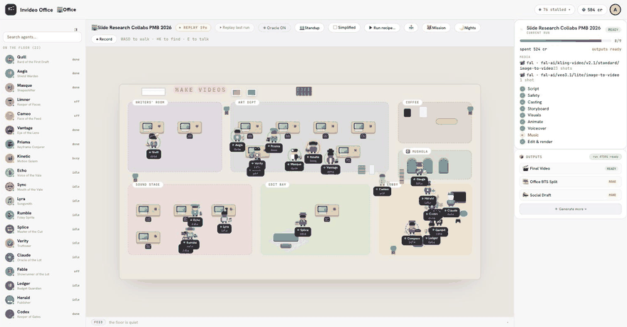
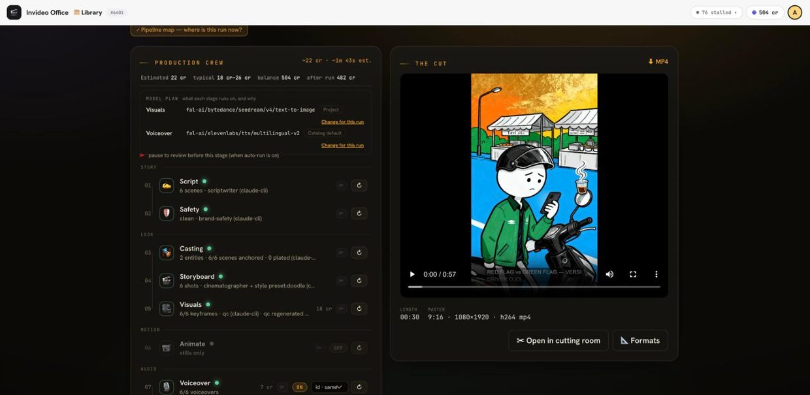
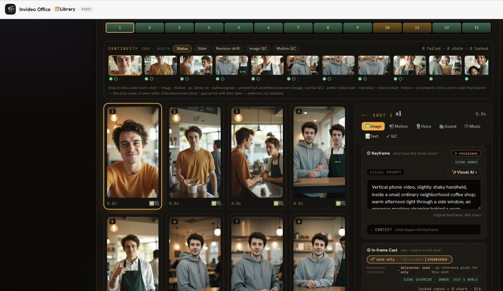
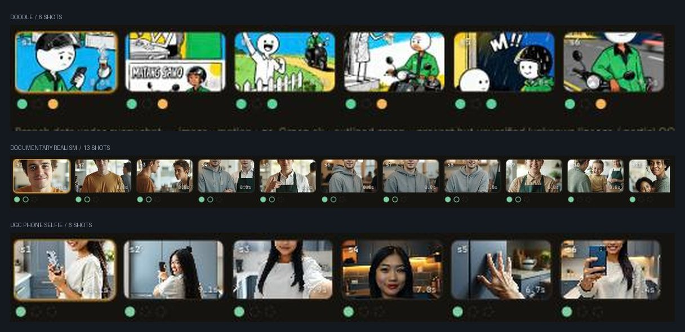

Agent crew
invideo — AI Video Creation Platform
An idea, a script or a link goes in; a finished, publish-ready video comes out. A crew of Claude-powered agents — Director, Scriptwriter, Cinematographer, Casting, Character Designer, Colorist, Sound, Music, Brand Safety and QC — is assembled per project and runs the production end to end.




- Ten-stage pipeline you can see and stop. Script, Safety, Casting, Storyboard, Visuals, Animate, Voiceover, Music, Sound, Edit & render — each stage re-runnable on its own, each able to pause for review before it spends anything.
- The bill before the run. Every stage carries a credit cost, and the panel shows estimated spend, the typical range, the current balance and what the balance would be afterwards — including when that number goes negative.
- Character consistency that is auditable. Recurring subjects are locked once and reused verbatim, with a seed lock, a consistency score across shots, and branch signatures showing exactly which routings each description was sent to.
- Nothing regenerates silently. Editing a character sheet changes future generations only; the storyboard tracks per-shot revision drift, stale frames and image/motion QC.
- Style is configuration, not a rebuild. The same ten stages produce hand-drawn doodle, documentary photorealism or UGC phone-selfie footage — platform, length, language, style and consistency mode are settings on the run.
- Model routing across providers — one family for the reasoning stages, others for image, video and speech — swappable per run, with an opt-in paid fallback if the free provider is down.
- Verified by integration suites against real containerised dependencies, plus architecture-boundary and contract tests that fail the build, on every pipeline.